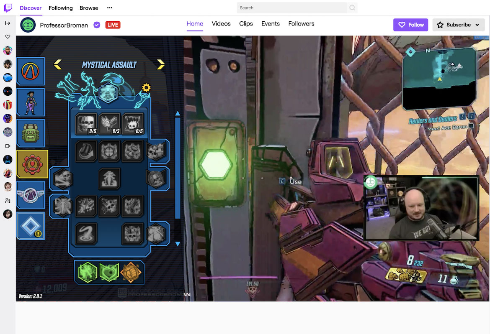

Construa o futuro do entretenimento ao vivo
As extensões do Twitch permitem experiências interativas que conectam streamers, espectadores e seu jogo. Comece a criar uma extensão em minutos usando uma conta do Twitch.


As extensões do Twitch permitem experiências interativas que conectam streamers, espectadores e seu jogo. Comece a criar uma extensão em minutos usando uma conta do Twitch.
Twitch é o lar de experiências ao vivo compartilhadas. Os desenvolvedores afetam a maneira como os streamers e espectadores experimentam jogos, cultura pop e conversas em grande escala.
streamers
Canais Twitch com extensões ativas
Usuários ativos diários
O Twitch oferece aos desenvolvedores produtos e soluções que ampliam o ciclo de vidado entretenimento além da tela.
As extensões do Twitch permitem que você crie aplicativos ao vivo que interagem com o stream, como um painel em um canal ou com bate-papo. Crie experiências interativas, como minijogos, tabelas de classificação, informações sobre equipamentos ao vivo e muito mais.
Saiba mais sobre ExtensõesSaiba como as empresas estão aproveitando os produtos Twitch Developer.
Uma integração do Twitch permite que os espectadores deem as cartas
Saber maisAlertas sonoros: uma história de sucesso do Twitch Bits-in-Extensions
Saber maisComo uma integração do Twitch dobrou os minutos de todos os tempos assistidos em um mês
Saber maisDesenvolvedores e marcas pioneiras em streaming no Twitch